使い方ガイド
このアドオンは、Blenderで「漫画・アニメ調の3D表現」を作るための支援ツールです。
4つのステップで、トゥーンレンダリング作品の土台をすぐに整えることができます。
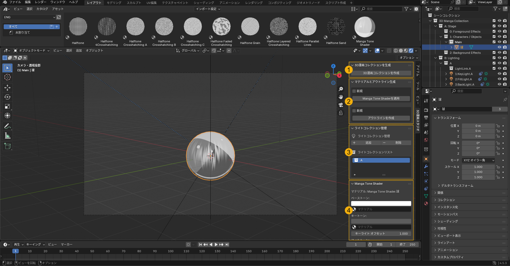
1. 3D漫画コレクションのセットアップ
まず最初に、作品用のシーン構造を自動で作りましょう。
🔧 操作手順
- Blenderの右側の「Nパネル」を開きます。 （ショートカットキー：Nキー）
- 「3D Manga Studios」タブを選びます。
- 「Create 3D Manga Collection」ボタンをクリック。
自動で作られる構造
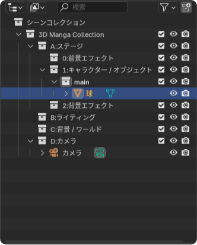
注意
- 「既存のコレクションをクリア」にチェックを入れると、既存コレクションをクリアして新しく構築します。強制的に既存のオブジェクトが消えるので気を付けてください。
- カメラが自動で設置されるため、構図作りがすぐに始められます。
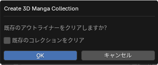
2. Manga Tone Shader と アウトラインの適用
キャラや小物に漫画調の質感と輪郭線をつけましょう。
🎨 トーンマテリアルを適用する
- 漫画調にしたいオブジェクトを選択します。
- 「3D Manga Studios」タブの Material & Outline Generation セクションへ。
- 「Apply Manga Tone Shader」をクリック。 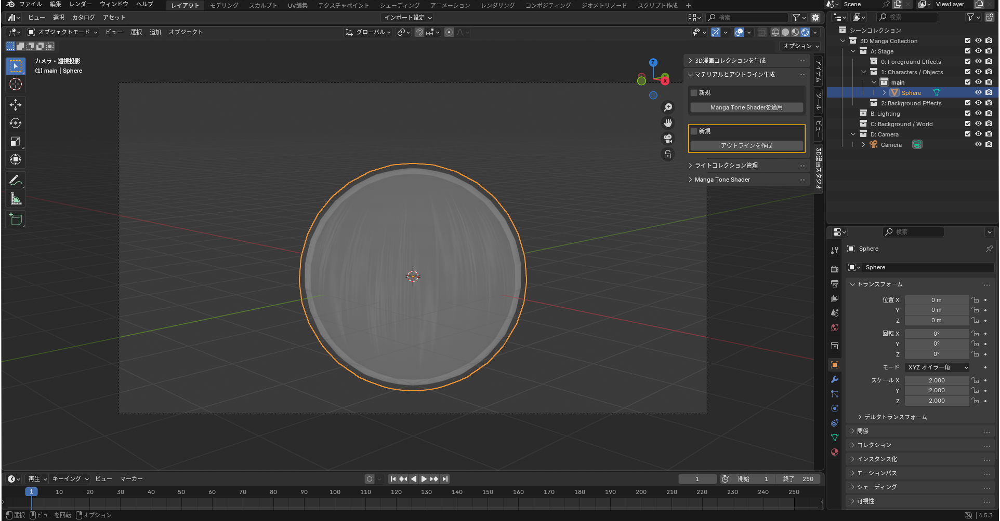
Note
- 「New」をONにすると、選択したオブジェクトごとに独立した新しいマテリアルが作られます。キャラクターや小物ごとに別々の模様を作成することができます。（使用例：主人公、モブキャラ、ヴィランキャラ）
- OFFのままだと共通マテリアルを共有します。繰り返し使用する小物などに向いています。（使用例：アイテム、小物、建物）
✏️ アウトラインを作成する
- 同じセクションの下にある「Create Outline」をクリック。
- 黒い輪郭線が自動的に追加されます。
- 輪郭線の太さはモディファイアから調整できます。

Note
原理 - Solidify（ソリディファイ）モディファイアを使い、裏面法線を反転して黒く描き出します。 - 「Manga Line」マテリアルが自動作成され、厚み（thickness）も自動調整されます。
3. ライトコレクションの追加
ライティングも漫画風に統一します。
3点ライト構成（Key／Fill／Back）を自動で配置してくれる便利な機能です。
💡 操作手順
- 「3D Manga Studios」タブの Light Collection Management を開く。
- 「Add Light」をクリック。
- 名前を入力してOKすると、ライトセットが追加されます。
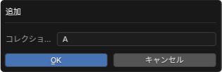 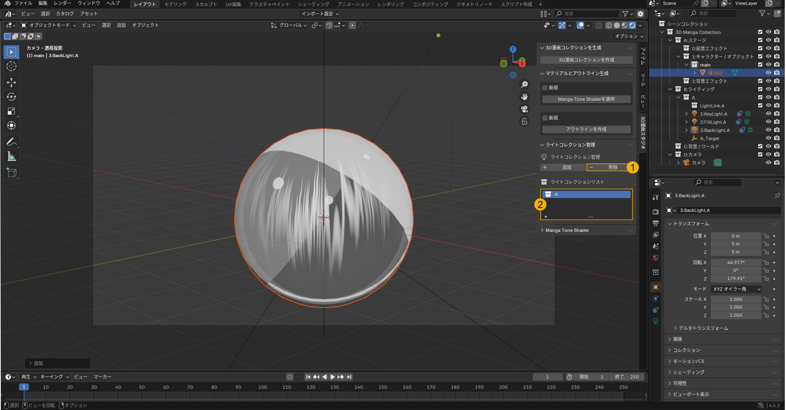
📦 自動生成される内容
- Key Light（赤）
- Fill Light（緑）
- Back Light（青）
- ターゲット用Emptyオブジェクト（ライトが追従）
 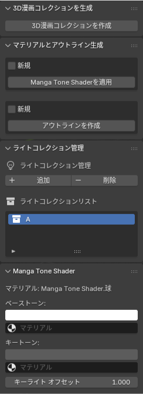
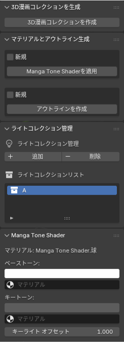
Note
- 各ライトは
B: Lightingコレクションに作成されます。 - ターゲットEmptyを動かすと、全ライトの照射方向が一緒に変わります。
- 各ライトの色（RGBの値）によってManga Tone Shaderに３種の照りが発生します。
- Light Linkingにも対応しているため、特定のオブジェクトにだけ照明を当てる調整も可能です。※ライトリンキングを対応するには「1:キャラクター / オブジェクト」または「1: Characters / Objects」の中にコレクションを１つ以上作成する必要があります。
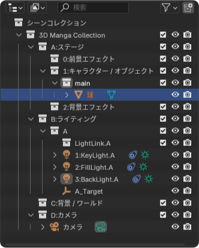
4. Manga Tone Shader のプロパティ調整
最後に、トーンマテリアルの細かい見た目を調整します。
ここは漫画の“描線や陰影”を作り込むステップです。
⚙️ 手順
- 漫画調マテリアルが割り当てられたオブジェクトを選択。
- 「3D Manga Studios」タブの Manga Tone Shader セクションを開く。
- 各パラメーターを調整して、自分の作品に合った表現に仕上げます。
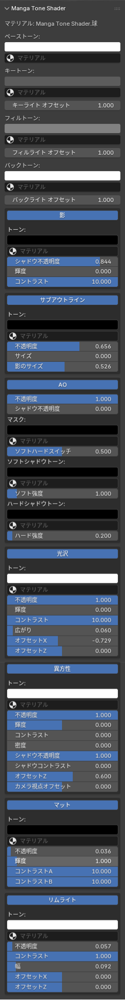
🎛 UIの特徴
-
ライトのオフセット → 照りの範囲を調整する部分 キーライト、フィルライト、バックライトの３つによる照りの広さを調整することができます。
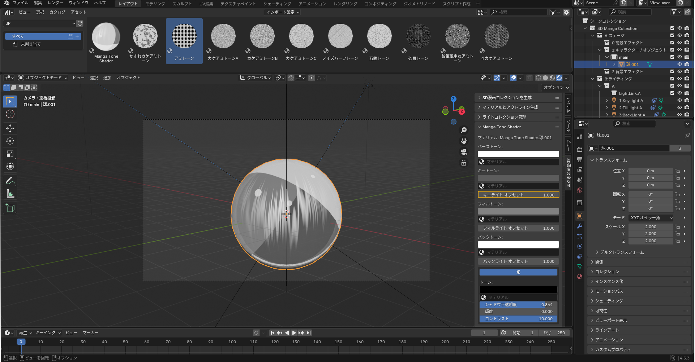 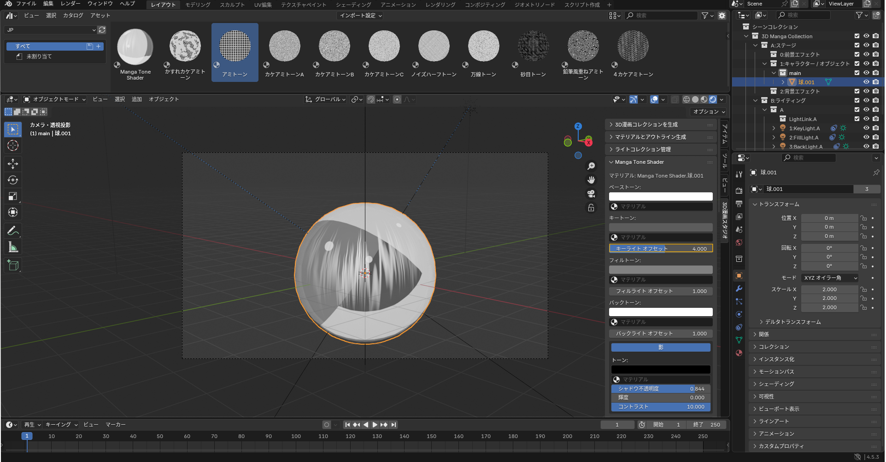
-
Boolean（ON/OFF）項目
→ 「影」「AO」「光沢」など、スイッチ的に子パラメータの表示が切り替わります。 （OFFにすると関連するプロパティや色設定が非表示になります）
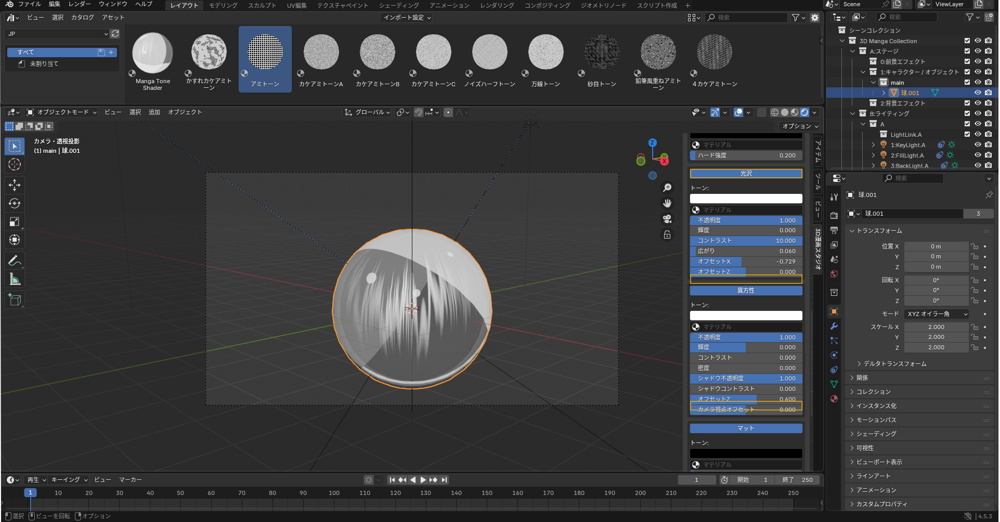 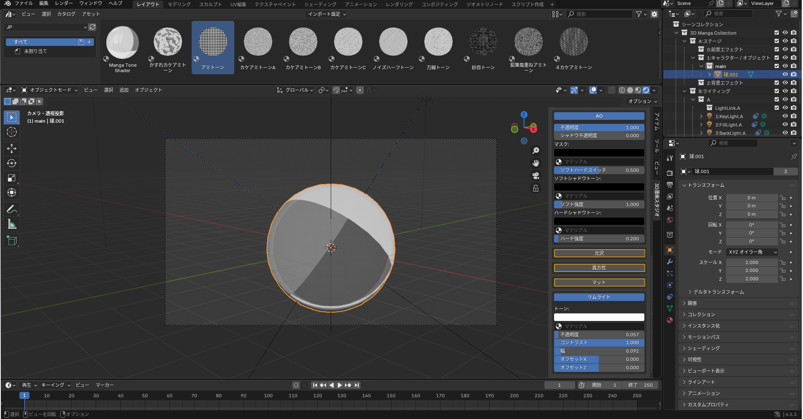
-
RGBA項目
→ 「色」や「トーンカラー」を設定する部分。 「Manga Tone Shader Assets」に格納されているスクリーントーンのマテリアルをカラー入力の下の欄にドラッグアンドドロップすることでその領域に模様を配置することができます。
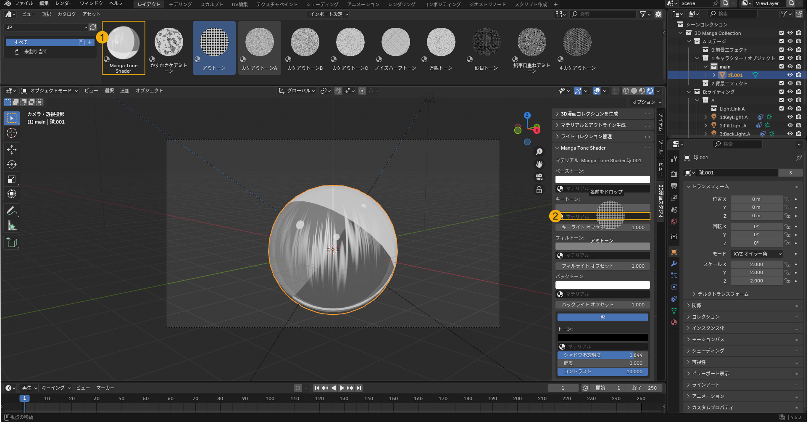 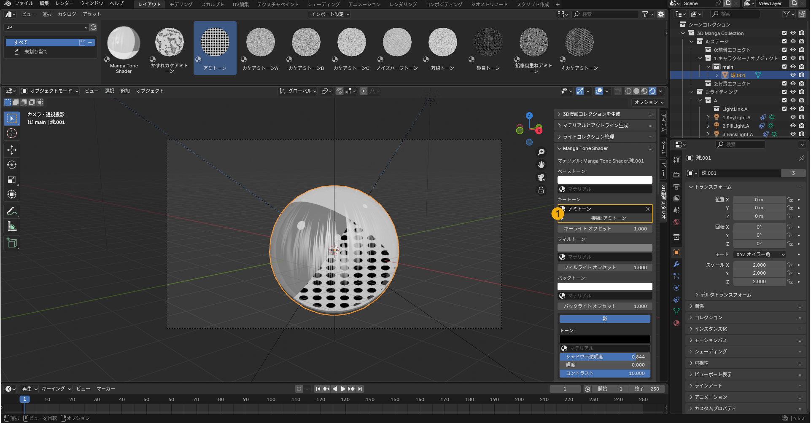
-
ドロップしたマテリアルのプロパティ → スクリーントーンを微調整する部分。 「Manga Tone Shader Assets」に接続したマテリアルのスケールや角度などを調整できます。
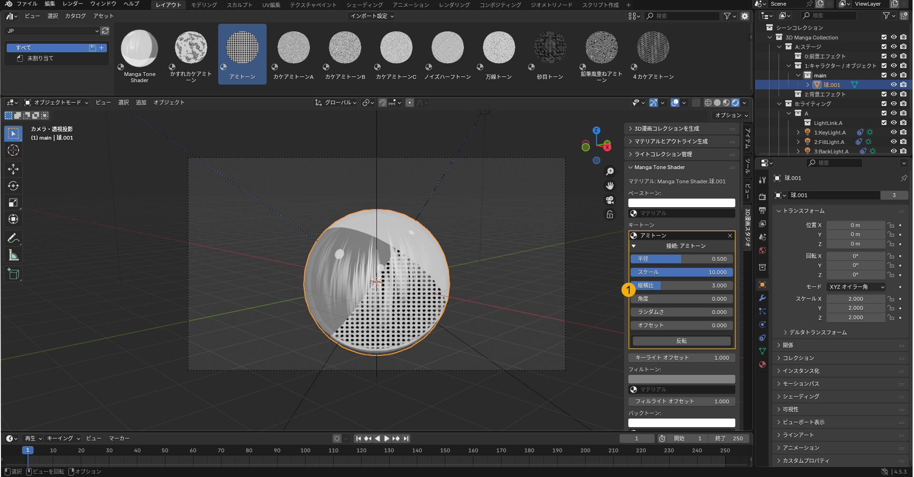
Note
- 「Manga Tone Shader」が見つからない場合は、アセットブラウザから一度ドラッグ＆ドロップしておくと認識されます。
- 設定を変えるとすぐにUIが再描画され、結果を確認できます。
🌈 まとめ
| ステップ | 機能 | 目的 |
|---|---|---|
| ① | 3D Manga Collection | シーンの土台を作る |
| ② | Manga Tone Shader / Outline | 漫画調の質感と線を付与 |
| ③ | Light Collection | ライティング環境を整える |
| ④ | Tone Shader調整 | 仕上げのトーン表現をコントロール |
💬 これだけでOK！ Blender初心者でも、数クリックで“漫画の1コマのような3Dシーン”を構築できます。 あとは構図とカメラワークで、あなたの世界を描くだけです。